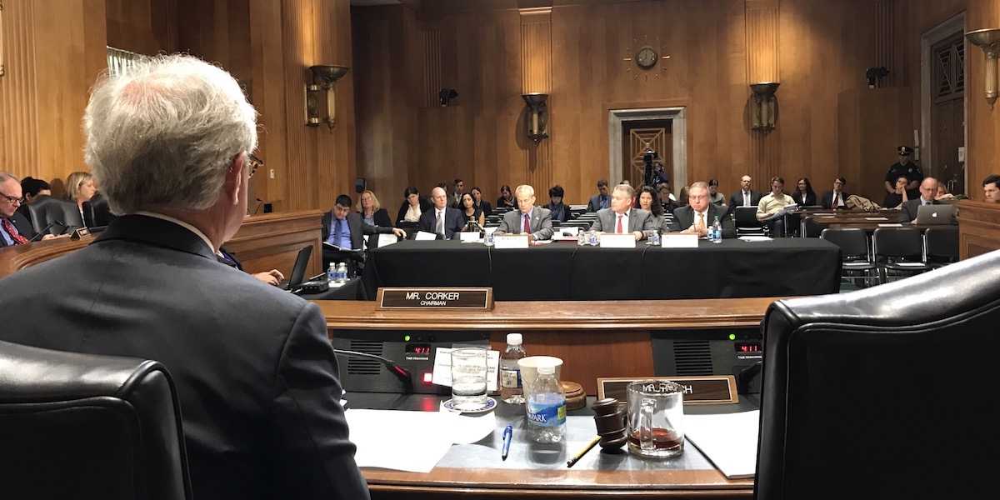

Chris Barrett testifying before the United States Foreign Relations Committee, October 2017.
One part of the group's outreach mission involves supporting local, national and international media in understanding current debates related to agriculture, food, international development and poverty. Some of this coverage originates with the group's research, while some relates to external events or topics on which we have some expertise that hopefully provides some useful insights.
The group's outreach programs include talks to school groups, professional development talks for young scholars, and presentations that translate technical research findings for non-technical audiences, especially in development policy organizations.